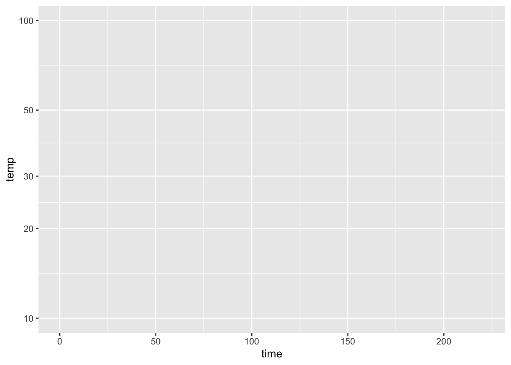

The tick marks on the logarithmic axis are labeled for 10, 20, 30, 50, and 100. Perhaps you expect to see labels at, say, 0, 25, 50, 100 or maybe 0, 50, 100, or even 0, 20, 40, 60, 80, 100, that is, evenly spaced between 0 and 100.
Such even splits of a 0-100 scale are not appropriate for logarithmic scales. One reason is that 0 cannot be on a logarithmic scale in the first place since \(\log(0) = -\infty\).
Another reason is that 1, 3, and 10 are pretty close to an even split of a logarithmic scale running from 1 to 10. It’s something like this:
1 2 3 5 10 x
|----------------------------------------------------|
0 1/3 1/2 7/10 1 log(x)It’s nice to have the labels show round numbers. It’s also nice for them to be evenly spaced along the axis. The 1-2-3-5-10 convention is a good compromise.